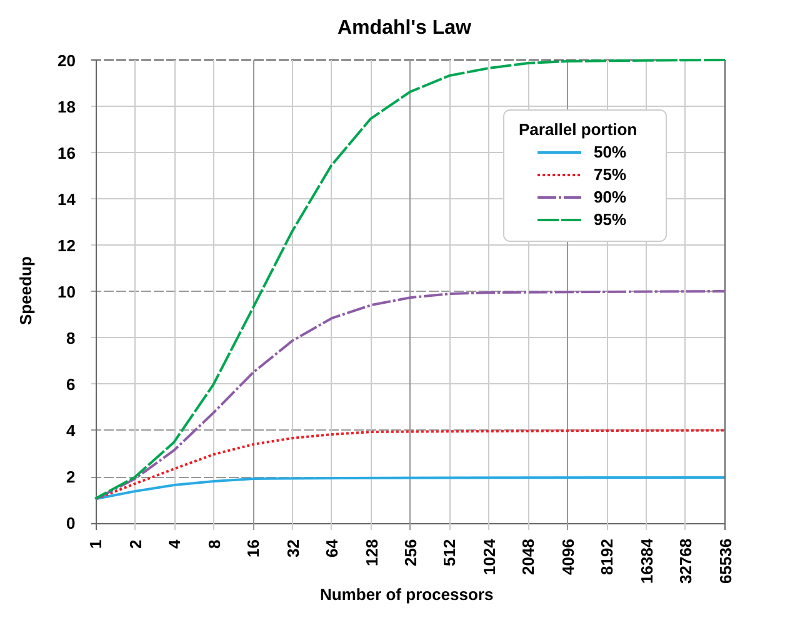

HPC 101
This page offers a short explanation of essential concepts in High Performance Computing.
Concurrent vs. Parallel
Concurrent programs handle multiple instruction sequences at the same time.
Parallel programs execute multiple instruction sequences at the same time.
When a program runs in parallel on multiple cores it is always concurrent.
When a program is handled concurrently, it is not necessarily a parallel program. Instructions can also make use of time-sharing (e.g. sharing a single CPU core).
Multithreading vs. Multiprocessing
Multithreaded programs use multiple threads and are all part of the same process. These threads share the same memory and resources.
Multiprocessed programs use multiple processes. Each process has its own memory and resource allocation.
Both multithreaded and multiprocessed programs are concurrent programs, they are therefore also not necessarily parallel.
Multiprocessed programs however enable true parallelism, by using multiple CPU cores simultanously where each CPU core is assigned one process.
Compute Time vs. Communication Overhead
In HPC, program execution often focuses on designing multiprocessing programs that execute tasks in parallel across multiple compute nodes. A crucial consideration is balancing compute time against communication overhead.
For instance, when dealing with large datasets, distributing the workload by dividing the data into smaller chunks across multiple processors can significantly reduce computation time. However, excessively fine-grained data partitioning can lead to substantial communication overhead, where the time spent transferring data between nodes outweighs the computational gains.
Amdahls Law
Amdahls law is formula that shows how much faster a task can be completed when more resources are added to a system. In the context of P (fraction of the code that can be parallelized) and N (number of processors) the speedup is defined as follows:
- Speedup = 1 / (1 - P + P / N)
Below example illustrates that the serial portion of a program has a big impact on the overall speedup:

When using ADA, take Amdahls Law into consideration: parallelize your code as much as possible before scaling up your requested processors.
Terms
CPU: a physical, central processing unit in compute hardware. Most modern day CPU’s are multi-core, containing multiple cores.
vCPU: a virtual, central processing unit. A CPU can contain multiple vCPU’s.
Core: a physical processing unit on a CPU chip.
Logical core: a virtual processing unit. A core can have multiple logical cores.
Hyperthreading: a technology that allows a core to appear as two logical cores in an operating system. Most hardware in the ADA cluster uses this technology by default. Compute intensive workloads will benefit to disable hyperthreading.
GPU: a physical, graphical processing unit in compute hardware.
vGPU: a virtual, graphical processing unit. A GPU can contain multiple vGPU’s.
RAM: Random Access Memory, the temporary storage for data that the CPU needs. RAM offers fast Read/Write speeds and is volatile (data is lost when power is turned off).
HDD: Hard Disk Drive, persistent storage offering Read/Write operations.
SSD: Solid State Drive, persistent storage that offers faster Read/Write speeds than HDD’s.
Scratch Space: When we refer to scratch space, we usually refer to the local SSD storage on the compute nodes. Use of scratch can significantly speed up your programs if it relies heavily on data operations.